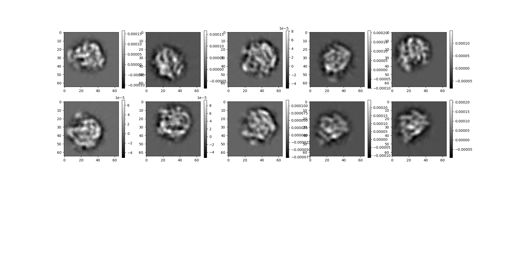
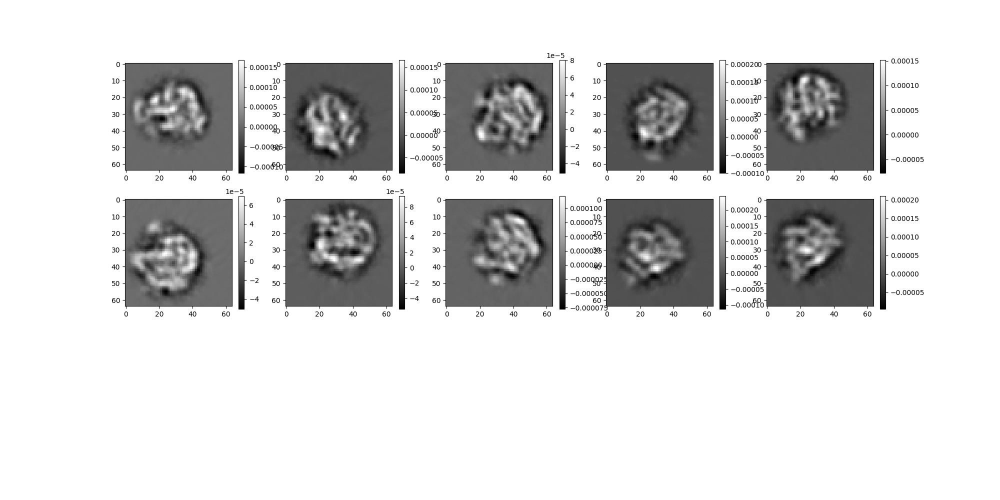
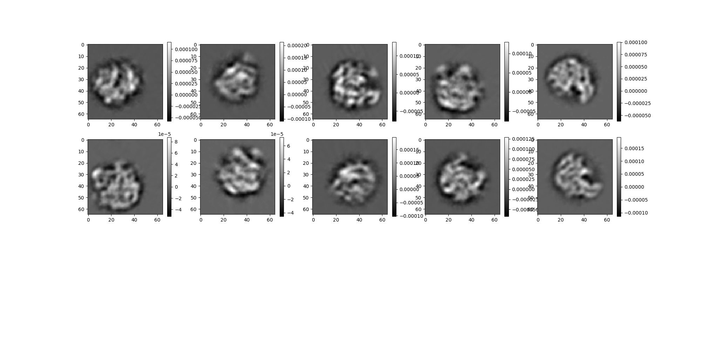
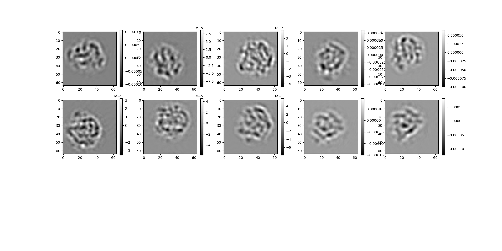
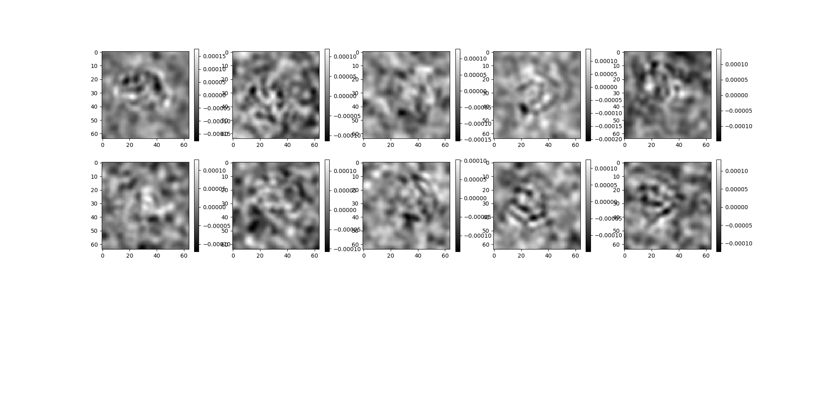
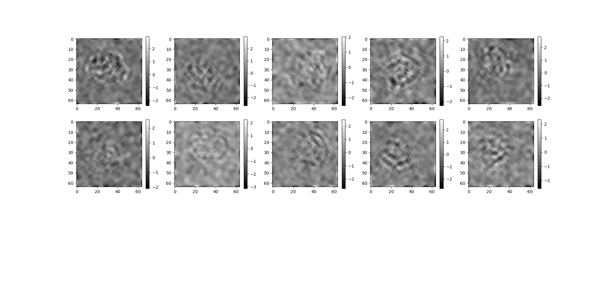

Note
Click here to download the full example code
ASPIRE-Python Introduction¶
In this notebook we will introduce some code from ASPIRE-Python that corresponds to topics from MATH586.
Imports¶
First we import some of the usual suspects. In addition, we import some classes from the ASPIRE package that we will use throughout this tutorial.
Homework Task 0¶
Attempt to install ASPIRE on your machine. ASPIRE can generally install on Linux, Mac, and Windows under Anaconda Python, by following the instructions in the README. The instructions for developers is the most comprehensive. Linux is the most tested platform.
ASPIRE requires some resources to run, so if you wouldn’t run typical data
science codes on your machine (maybe a netbook for example),
you may use TigerCPU. After logging into TigerCPU,
module load anaconda3/2020.7 and follow the anaconda instructions for
developers in the link above.
Those instructions should create a working environment for tinkering with
ASPIRE code found in this notebook.
import logging
import os
import matplotlib.pyplot as plt
import numpy as np
from aspire.abinitio import CLSyncVoting
from aspire.noise import (
AnisotropicNoiseEstimator,
CustomNoiseAdder,
WhiteNoiseAdder,
WhiteNoiseEstimator,
)
from aspire.operators import FunctionFilter, RadialCTFFilter
from aspire.source import RelionSource, Simulation
from aspire.utils import (
Rotation,
get_aligned_rotations,
get_rots_mse,
register_rotations,
)
from aspire.volume import Volume
logger = logging.getLogger(__name__)
Image Class¶
The Image class
is a thin wrapper over numpy arrays for a stack containing 1 or more images.
In this notebook we won’t be working directly with the Image class a lot, but it will be one of the fundemental structures behind the scenes.
A lot of ASPIRE code passes around Image and Volume classes.
Examples of using the Image class can be found in:
gallery/tutorials/basic_image_array.pygallery/tutorials/image_class.py
Volume Class¶
Like Image, the Volume class
is a thin wrapper over numpy arrays that provides specialized methods for a stack containing 1 or more volumes.
Here we will instantiate a Volume using a numpy array and use it to downsample to a desired resolution (64 should be good). For the data source I chose to download a real volume density map from EMDB. The download was uncompressed in my local directory. The notebook defaults to a small low resolution sample file you may use to sanity check. Unfortunately real data can be quite large so we do not ship it with the repo.
Homework Task 1¶
Starting from EMPIAR find a molecule of interest and try to
find if it has a corresponding volume density map from EMDB.
Download such a map and use it in the following experiments where I have used 2660.
Helpful friendly hint: mrcfile will typically open .map files provided by EMDB, corresponding to an EMPIAR entry. This was not obvious to me, but you may read more about the format here.
Initialize Volume¶
# A low res example file is included in the repo as a sanity check.
# We can instantiate this as an ASPIRE Volume instance using ``Volume.load()``.
DATA_DIR = "data"
v = Volume.load(os.path.join(DATA_DIR, "clean70SRibosome_vol_65p.mrc"))
# More interesting data requires downloading locally.
# v = Volume.load("EMD-2660/map/emd_2660.map")
# Downsample the volume to a desired resolution
img_size = 64
# Volume.downsample() Returns a new Volume instance.
# We will use this lower resolution volume later.
v2 = v.downsample(img_size)
L = v2.resolution
Contour Plot of Data¶
# Alternatively, for quick sanity checking purposes we can view as a contour plot.
# We'll use three orthographic projections, one per axis.
for axis in range(3):
plt.contourf(np.arange(L), np.arange(L), np.sum(v2[0], axis=axis), cmap="gray")
plt.show()
Scatter Plot¶
# We can attempt a 3d scatter plot, but the results aren't very good.
x, y, z = np.meshgrid(np.arange(L), np.arange(L), np.arange(L))
ax = plt.axes(projection="3d")
ax.scatter3D(x, y, z, c=np.log10(v2.flatten()), cmap="Greys_r")
plt.show()
/home/runner/work/ASPIRE-Python/ASPIRE-Python/gallery/tutorials/lecture_feature_demo.py:135: RuntimeWarning: invalid value encountered in log10
ax.scatter3D(x, y, z, c=np.log10(v2.flatten()), cmap="Greys_r")
Homework Task 2¶
Above I have used a simple log transform with a scatter plot to peek at the 3D data.
This was mainly just to make sure the data was in the neighborhood of what I was looking for.
More commonly we will want to construct an isosurface plot.
Try to create a better plot of the volume (this will probably require more advanced tools than matplotlib).
Rotation Class - Generating Random Rotations¶
To get general projections this brings us to generating random rotations which we will apply to our volume.
While you may bring your own 3x3 matrices or generate manually (say from your own Euler angles), ASPIRE has a Rotation class which can do this random rotation generation for us. It also has some other utility methods if you would want to compare with something manual.
The following code will generate some random rotations, and use the Volume.project() method to return an Image instance representing the stack of projections.
We can display projection images using the Image.show() method.
num_rotations = 2
rots = Rotation.generate_random_rotations(n=num_rotations, seed=12345)
# We can access the numpy array holding the actual stack of 3x3 matrices:
logger.info(rots)
logger.info(rots.matrices)
# Using the first (and in this case, only) volume, compute projections using the stack of rotations:
projections = v.project(0, rots)
# project() returns an Image instance.
logger.info(projections)
projections.show()
# Neat, we've generated random projections of some real data.
The source Package¶
aspire.source
package contains a collection of data source interfaces.
The idea is that we can design an experiment using a synthetic Simulation source or our own provided array via ArrayImageSource;
then later swap out the source for a large experimental data set using something like RelionSource.
We do this because the experimental datasets are too large to fit in memory.
They cannot be provided as a massive large array, and instead require methods to orchestrate batching.
Depending on the application, they may also require corresponding batched algorithms.
The Source classes try to make most of this opaque to an end user. Ideally we can swap one source for another.
For now we will build up to the creation and application of synthetic data set based on the real volume data used previously.
Simulation Class¶
Generating realistic synthetic data sources is a common task.
The process of generating then projecting random rotations is integrated into the
Simulation class.
Using Simulation, we can generate arbitrary numbers of projections for use in experiments.
Later we will demonstrate additional features which allow us to create more realistic data sources.
num_imgs = 100 # How many images in our source.
# Generate a Simulation instance based on the original volume data.
sim = Simulation(L=v.resolution, n=num_imgs, vols=v)
# Display the first 10 images
sim.images[:10].show() # Hi Res
# Repeat for the lower resolution (downsampled) volume v2.
sim2 = Simulation(L=v2.resolution, n=num_imgs, vols=v2)
sim2.images[:10].show() # Lo Res
# Note both of those simulations have the same rotations
# because they had the same seed by default,
# We can set our own seed to get a different random samples (of rotations).
sim_seed = Simulation(L=v.resolution, n=num_imgs, vols=v, seed=42)
sim_seed.images[:10].show()
# We can also view the rotations used to create these projections
# logger.info(sim2.rotations) # Commented due to long output
- 
- 
- 
Simulation with Noise - Filters¶
Filters¶
Filters
are a collection of classes which once configured can be applied to Source pipelines.
Common filters we might use are ScalarFilter, PowerFilter, FunctionFilter, and CTFFilter.
Adding to Simulation¶
We can customize Sources by adding stages to their generation pipeline. In this case of a Simulation source, we want to corrupt the projection images with significant noise.
First we create a constant two dimension filter (constant value set to our desired noise variance).
Then when used in the noise_filter, this scalar will be multiplied by a random sample.
Similar to before, if you require a different sample, this would be controlled via a seed.
# Using the sample variance, we'll compute a target noise variance
var = np.var(sim2.images[:].asnumpy())
logger.info(f"sim2 clean sample var {var}")
noise_variance = 100.0 * var
logger.info(f"noise var {noise_variance}")
# Then create a CustomNoiseAdder based on that variance.
white_noise_adder = WhiteNoiseAdder(var=noise_variance)
# We can create a similar simulation with this additional noise_filter argument:
sim3 = Simulation(L=v2.resolution, n=num_imgs, vols=v2, noise_adder=white_noise_adder)
sim3.images[:10].show()
# These should be rather noisy now ...
Common Line Estimation¶
Now we can create a CL instance for estimating orientation of projections using the Common Line with synchronization method.
We will import CLSyncVoting,
then several helper utilities fron the coor_trans package to help verify our estimates.
For each iteration in the loop: - Save the true rotations - Compute orientation estimate using CLSyncVoting method - Compare the estimated vs true rotations
Each iteration will logger.info some diagnostic information that contains the top eigenvalues found. From class we learned that a healthy eigendistribution should have a significant gap after the third eigenvalue. It is clear we have such eigenspacing for the clean images, but not for the noisy images.
for desc, _sim in [
("High Res", sim),
("Downsampled", sim2),
("Downsampled with Noise", sim3),
]:
logger.info(desc)
true_rotations = _sim.rotations # for later comparison
orient_est = CLSyncVoting(_sim, n_theta=36)
# Get the estimated rotations
orient_est.estimate_rotations()
rots_est = orient_est.rotations
# Compare with known true rotations
Q_mat, flag = register_rotations(rots_est, true_rotations)
regrot = get_aligned_rotations(rots_est, Q_mat, flag)
mse_reg = get_rots_mse(regrot, true_rotations)
logger.info(
f"MSE deviation of the estimated rotations using register_rotations : {mse_reg}\n"
)
Homework Task 3¶
We confirmed a dramatic change in the eigenspacing when we add a lot of noise. Compute the SNR in this case using the formula described from class. Repeat the experiment with varying levels of SNR to find at what level the character of the eigenspacing changes. This will require changing the Simulation Source’s noise_filter. How does this compare with the levels discussed in lecture?
More Advanced Noise - Whitening¶
We can estimate the noise across the stack of images
The noise Package¶
The aspire.noise package contains several useful classes for generating and estimating different types of noise.
In this case, we know the noise to be white, so we can proceed directly to
WhiteNoiseEstimator. The noise estimators consume from a Source.
The white noise estimator should log a diagnostic variance value. How does this compare with the known noise variance above?
# Create another Simulation source to tinker with.
sim_wht = Simulation(
L=v2.resolution, n=num_imgs, vols=v2, noise_adder=white_noise_adder
)
# Estimate the white noise.
noise_estimator = WhiteNoiseEstimator(sim_wht)
0%| | 0/1 [00:00<?, ?it/s]
100%|##########| 1/1 [00:00<00:00, 1.45it/s]
100%|##########| 1/1 [00:00<00:00, 1.45it/s]
A Custom FunctionFilter¶
We will now apply some more interesting noise, using a custom function, and then apply a whitening process to our data.
Using FunctionFilter we can create our own custom functions to apply in a pipeline.
Here we want to apply a custom filter as a noise adder. We can use a function of two variables for example.
def noise_function(x, y):
return 1e-7 * np.exp(-(x * x + y * y) / (2 * 0.3**2))
# In python, functions are first class objects.
# We take advantage of that to pass this function around as a variable.
# It will be evaluated later...
custom_noise = CustomNoiseAdder(noise_filter=FunctionFilter(noise_function))
# Create yet another Simulation source to tinker with.
sim4 = Simulation(L=v2.resolution, n=num_imgs, vols=v2, noise_adder=custom_noise)
sim4.images[:10].show()
Noise Whitening¶
Applying the Simulation.whiten() method just requires passing the filter corresponding to the estimated noise instance.
Then we can inspect some of the whitened images. While noise is still present, we can see a dramatic change.
# Estimate noise.
aiso_noise_estimator = AnisotropicNoiseEstimator(sim4)
# Whiten based on the estimated noise
sim4.whiten(aiso_noise_estimator.filter)
# What do the whitened images look like...
sim4.images[:10].show()
0%| | 0/1 [00:00<?, ?it/s]
100%|##########| 1/1 [00:00<00:00, 1.88it/s]
100%|##########| 1/1 [00:00<00:00, 1.88it/s]
Homework Task 4¶
Try some other image preprocessing methods exposed by the Simulation/ImageSource classes.
Try some other custom function to add noise or other corruptions to the images.
Real Experimental Data - RelionSource¶
Now that we know our experiment code seems to run, we can try to replace the simulation with a real experimental data source.
Lets attempt the same CL experiment, but with a RelionSource.
src = RelionSource(
"data/sample_relion_data.star",
data_folder="",
pixel_size=5.0,
max_rows=1024,
)
# Data resides on Tiger Cluster
# Please make sure you are using a compute node once you've installed ASPIRE, not the head node...
# src = RelionSource(
# "/tigress/gbwright/data/cryo-em/CryoEMdata/empiar10028/shiny_2sets.star", data_folder="", pixel_size=5.0, max_rows=100
# )
src.downsample(img_size)
src.images[:10].show()
noise_estimator = WhiteNoiseEstimator(src)
src.whiten(noise_estimator.filter)
orient_est = CLSyncVoting(src, n_theta=36)
orient_est.estimate_rotations()
rots_est = orient_est.rotations
0%| | 0/1 [00:00<?, ?it/s]
100%|##########| 1/1 [00:00<00:00, 69.90it/s]
We can see that the code can easily run with experimental data by subsituting the Source class.
However, we have hit the practical limitation that requires class averaging of images….
CTF Filter¶
Here we can use the RadialCTFFilter subclass of
CTFFilter
to generate some simulated images with CTF effects.
We use the unique_filter argument of the Simulation class to apply a collection of several CTFs with different defocus.
The defocus values are generated from the np.linspace method. We end up with a list of filters.
By combining CTFFilters, noise, and other filters ASPIRE can generate repeatable rich data sets with controlled parameters.
The Simulation class will attempt to apply transforms on the fly to batches of our images, allowing us to generate arbitrarily long stacks of data.
# Specify the CTF parameters not used for this example
# but necessary for initializing the simulation object
pixel_size = 5 # Pixel size of the images (in angstroms)
voltage = 200 # Voltage (in KV)
defocus_min = 1.5e4 # Minimum defocus value (in angstroms)
defocus_max = 2.5e4 # Maximum defocus value (in angstroms)
defocus_ct = 7 # Number of defocus groups.
Cs = 2.0 # Spherical aberration
alpha = 0.1 # Amplitude contrast
# Initialize simulation object with CTF filters.
# Create CTF filters
filters = [
RadialCTFFilter(pixel_size, voltage, defocus=d, Cs=2.0, alpha=0.1)
for d in np.linspace(defocus_min, defocus_max, defocus_ct)
]
sim5 = Simulation(L=v2.resolution, n=num_imgs, vols=v2, unique_filters=filters)
sim5.images[:10].show()
# Here we will combine CTF and noise features to our projections.
sim6 = Simulation(
L=v2.resolution,
n=num_imgs,
vols=v2,
unique_filters=filters,
noise_adder=custom_noise,
)
sim6.images[:10].show()
# Estimate noise.
aiso_noise_estimator = AnisotropicNoiseEstimator(sim6)
# Whiten based on the estimated noise
sim6.whiten(aiso_noise_estimator.filter)
sim6.images[:10].show()
- 
- 
- 
0%| | 0/1 [00:00<?, ?it/s]
100%|##########| 1/1 [00:00<00:00, 1.85it/s]
100%|##########| 1/1 [00:00<00:00, 1.85it/s]
Total running time of the script: ( 0 minutes 27.759 seconds)